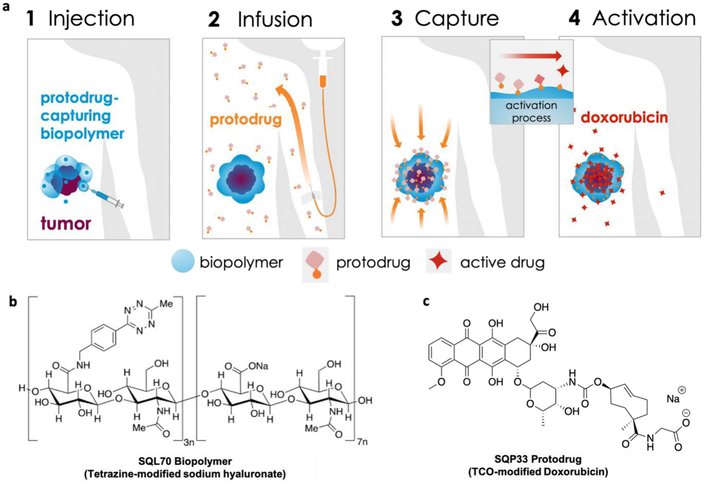
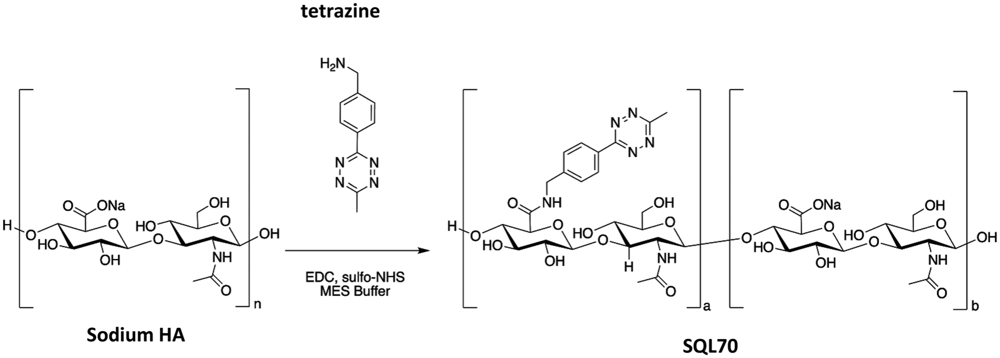
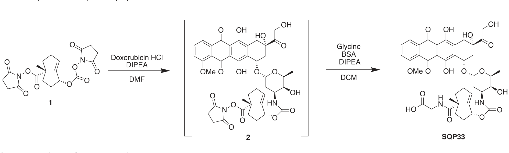
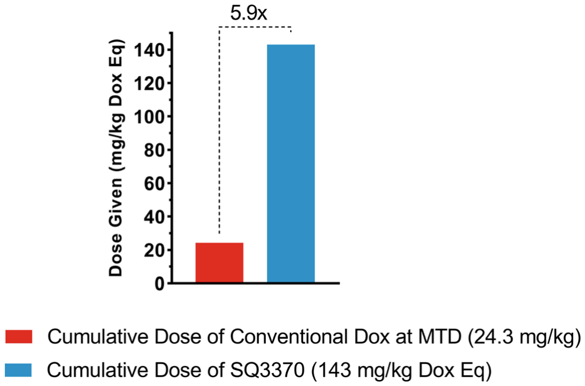
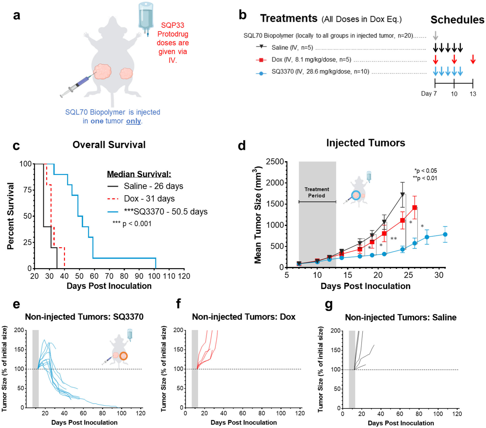
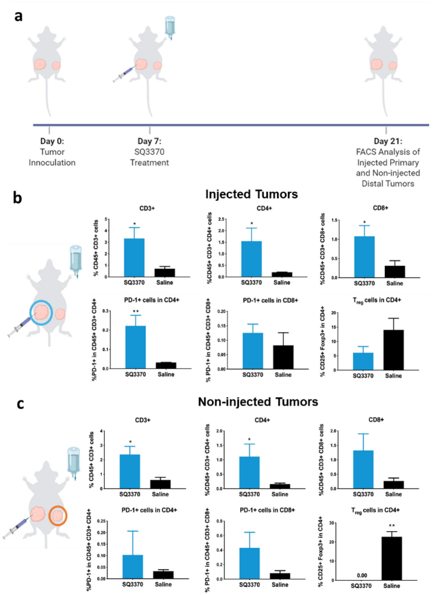
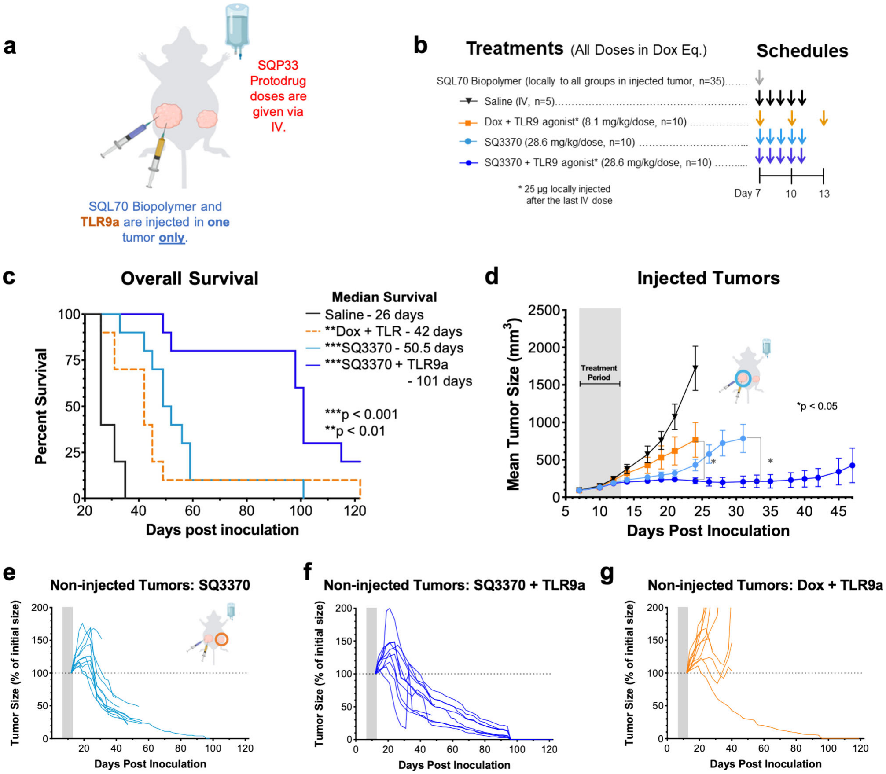
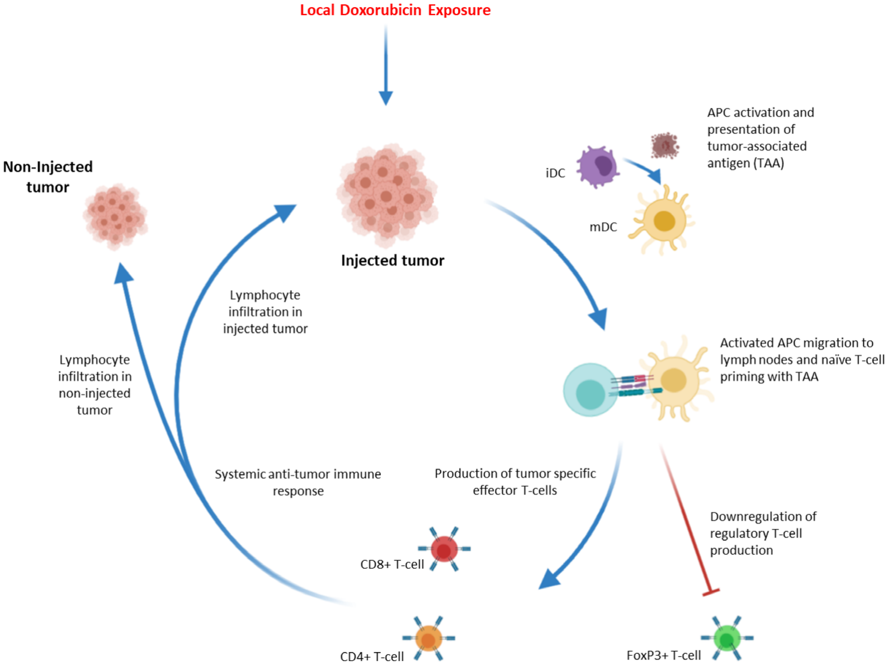

01. Batasan Doxorubicin & Paradigma Baru Click Chemistry In Vivo
Revolusi imunoterapi kanker—khususnya penghambat pos pemeriksaan imun (immune checkpoint inhibitors seperti anti-PD-1 dan anti-CTLA-4)—telah memberikan harapan kesembuhan spektakuler bagi sebagian pasien onkologi. Namun, kenyataan klinis yang pahit menunjukkan bahwa hanya sebagian kecil pasien (sering kali di bawah 20–30%) yang benar-benar memetik manfaat jangka panjang. Sebagian besar tumor bersifat "dingin" (cold tumors): miskin infiltrasi sel T sitotoksik, tidak mengekspresikan biomarker imun yang memadai, atau dilindungi oleh mikro-lingkungan imunosupresif yang padat.
Akibatnya, kemoterapi sitotoksik konvensional seperti doksorubisin (Dox) tetap menjadi pilar utama perawatan kanker di seluruh dunia, mulai dari sarkoma jaringan lunak, kanker payudara, karsinoma kolorektal, hingga limfoma. Padahal, doksorubisin memiliki jendela terapeutik yang teramat sempit: dosis obat yang dibutuhkan untuk membasmi tumor sering kali memicu kardiotoksisitas ireversibel (gagal jantung kongestif) serta limfopenia berat yang justru melumpuhkan sistem kekebalan tubuh pasien sendiri.
Pendekatan bertarget modern seperti Antibody-Drug Conjugates (ADC), formulasi liposomal, dan nanopartikel dirancang untuk mengatasi masalah ini. Sayangnya, seluruh teknologi tersebut masih bersandar pada perbedaan biologis alami antara sel sehat dan sel kanker—seperti ekspresi antigen permukaan tertentu, aktivitas enzim ekstraseluler, derajat keasaman (pH tumor), atau kadar spesies oksigen reaktif (ROS). Karena jaringan normal juga mengekspresikan faktor-faktor biologis ini (meski dalam kadar lebih rendah), terapi bertarget biologis tetap menghasilkan toksisitas di luar sasaran (off-target toxicity) atau menjadi tidak berdaya saat sel kanker mengalami mutasi resistensi.

Untuk mendobrak keterbatasan biologis tersebut, tim peneliti dari Shasqi, Inc. bekerja sama dengan University of Albany (SUNY) menciptakan platform Click Activated Protodrugs Against Cancer (CAPAC). Alih-alih bergantung pada biologi tumor yang rapuh dan heterogen, CAPAC memanfaatkan prinsip kimia bioortogonal murni: reaksi kimia sintetis buatan manusia yang saling bereaksi secara eksklusif, instan, ireversibel, dan inert terhadap molekul biologis alami apa pun di dalam darah maupun jaringan tubuh.
02. Arsitektur Molekuler SQ3370: Mengunci Reaktivitas Tetrazin–TCO
Jantung dari platform CAPAC adalah pasangan reaksi klik Inverse Electron-Demand Diels-Alder (IEDDA) antara 1,2,4,5-tetrazin dan trans-cyclooctene (TCO). Reaksi ini merupakan salah satu reaksi kimia buatan paling cepat yang pernah tercatat dalam sistem biologi (konstanta laju orde 10⁴–10⁵ M⁻¹s⁻¹), berlangsung spontan tanpa katalis logam, dan menghasilkan gas nitrogen (N₂) sebagai satu-satunya produk sampingan tak berbahaya.
Kandidat utama platform ini dinamai SQ3370, yang terdiri atas dua komponen yang diproduksi dan diadministrasikan secara terpisah:
1. SQL70 Biopolymer: Jangkar Tetrazin Berbasis Asam Hialuronat
Sebagai jangkar penangkap di jaringan tumor, tim peneliti memilih polimer alami asam hialuronat (HA / sodium hyaluronate) dengan bobot molekul 12 kDa. Asam hialuronat dipilih menggantikan polimer alginat generasi pertama karena profil tolerabilitasnya yang telah teruji secara klinis selama lebih dari lima dekade pada manusia, serta perannya sebagai regulator inflamasi alami di matriks ekstraseluler.

Melalui proses optimasi kimia, derajat substitusi tetrazin diformulasikan tepat pada ~19 weight%. Viskositas dan fluiditas SQL70 diatur secara presisi sehingga dapat disuntikkan dengan mudah melalui jarum suntik tipis langsung ke sekitar tumor (peritumoral) atau ke dalam massa tumor (intratumoral). Sekali disuntikkan, biopolimer ini membentuk depot lokal yang menetap di tumor selama berminggu-minggu, siap menangkap protodrug yang lewat dalam peredaran darah.
2. SQP33 Protodrug: Doksorubisin Hidrofilik Generasi Baru
Kelemahan terbesar protodrug generasi pertama ("TCO-Dox") adalah kelarutannya yang sangat buruk dalam air (<0.001 mg/mL), sehingga membatasi jumlah dosis yang dapat diinfuskan. Untuk mengatasinya, tim kimia memasukkan ligan residu asam amino glisin hidrofilik pada cincin TCO (Skema 2).

Penambahan residu glisin menghasilkan terobosan spektakuler: kelarutan SQP33 dalam larutan dapar fosfat (PBS, pH 7.0) melesat menjadi 71.8 mg/mL—peningkatan lebih dari 4 orde magnitudo (naik 10.000× lipat) dibanding generasi pendahulunya. Uji sitotoksisitas in vitro menunjukkan bahwa SQP33 bersifat 82 kali lipat lebih tidak toksik terhadap sel kanker kolorektal MC38 dibandingkan doksorubisin bebas. Artinya, molekul ini bersirkulasi di pembuluh darah dalam keadaan dorman (inaktif), tidak merusak sel-sel sumsum tulang, endotel pembuluh darah, maupun kardiomiosit jantung.

03. Efikasi pada Model Dua Tumor: Ledakan Efek Sistemik Abscopal
Keberhasilan menginjeksi obat sitotoksik secara lokal sering kali memunculkan skeptisisme di kalangan onkolog: bagaimana mungkin injeksi lokal dapat menolong pasien kanker metastasis yang memiliki puluhan anak sebar mikroskopis di organ lain?
Untuk menjawab keraguan tersebut, para peneliti merancang eksperimen model dua tumor (syngeneic dual-tumor model) pada mencit imunokompeten C57BL/6. Pada hari ke-0, mencit diinokulasi dengan dua tumor kanker kolorektal MC38 terpisah:
- Tumor Primer ("Injected Tumor"): 5 × 10⁵ sel diinokulasikan pada panggul kanan mencit. Pada hari ke-7 (ketika volume mencapai ~100 mm³), tumor ini menerima injeksi tunggal biopolimer SQL70.
- Tumor Distal ("Non-Injected Tumor"): 1 × 10⁵ sel diinokulasikan pada panggul kiri mencit. Tumor ini tidak pernah menerima injeksi biopolimer apa pun, berfungsi sebagai model lesi metastasis jauh.

Hasil eksperimen ini sangat mencengangkan:
Pada tumor primer, SQ3370 menekan pertumbuhan massa tumor secara berkelanjutan (p < 0.05). Namun, fenomena paling spektakuler terlihat pada tumor distal yang tidak pernah disuntik biopolimer (Gambar 3e). Sementara doksorubisin IV standar gagal total menahan pertumbuhan tumor distal, kelompok yang diobati dengan SQ3370 memperlihatkan penyusutan dan regresi tumor distal yang signifikan! Karena tumor distal tidak mengandung tetrazin dan tidak mengalami pelepasan doksorubisin secara lokal, regresi lesi jauh ini hanya dapat dijelaskan oleh satu mekanisme: aktivasi sistem imun adaptif tubuh yang menyebar secara sistemik (efek abscopal / anenestic response).
04. Pemetaan Imun Tumor: Mengapa Lesi Distal Ikut Menyusut?
Guna mengungkap rahasia biologis di balik lenyapnya tumor non-terinjeksi, para peneliti memanen jaringan tumor pada 2 minggu pasca perlakuan dan melakukan analisis sitometri alir multi-warna (multi-color flow cytometry) untuk memetakan populasi Tumor-Infiltrating Lymphocytes (TILs).
| Biomarker Permukaan | Populasi Sel Imun Sasaran | Peran Fungsional dalam Tumor |
|---|---|---|
| CD45+ | Sel imun total penginfiltrasi | Membedakan leukosit darah dari sel tumor MC38 epitelial |
| CD45+ CD3+ | Sel limfosit T total | Populasi efektor imun seluler garis depan |
| CD45+ CD3+ CD4+ | Sel T Pembantu (Helper T cells) | Mengorkestrasi sinyal sitokin dan rekrutmen sel efektor |
| CD45+ CD3+ CD8+ | Sel T Sitotoksik (Cytotoxic CTLs) | Membunuh sel tumor secara langsung melalui perforin/granzim |
| PD-1+ dalam CD4+/CD8+ | Sel T teraktivasi / tanda kelelahan | Pos pemeriksaan imun sasaran antibodi anti-PD-1 |
| CD25+ FoxP3+ (CD4+) | Sel T Regulator (Tregs) | Imunosupresor yang melindungi sel kanker dari serangan imun |

Hasil analisis FACS memperlihatkan perbedaan fenotipik yang sangat tajam dan komplementer antara kedua tumor:
- Pada Tumor Primer (Injected): Terjadi influks besar-besaran sel T sitotoksik CD8+ (p < 0.05) dan sel T pembantu CD4+ (p < 0.05). Dosis doksorubisin lokal super-tinggi memicu kematian sel imunogenik (Immunogenic Cell Death / ICD), memuntahkan ribuan antigen terkait tumor (TAA) yang segera ditangkap oleh sel dendritik.
- Pada Tumor Distal (Non-Injected): Terjadi lonjakan sel CD4+ yang dibarengi dengan penurunan drastis populasi sel T regulator (FoxP3+ Tregs, p < 0.01). Penurunan Tregs meruntuhkan perisai imunosupresi pada tumor metastatik, memungkinkan sel T efektor mengenali dan menghancurkan massa tumor distal tanpa hambatan.
- Upregulasi PD-1 pada Tumor Primer: Terapi SQ3370 secara spesifik meningkatkan ekspresi molekul pos pemeriksaan PD-1 pada sel CD4+ di tumor terinjeksi. Ini adalah sinyal biologis kritis: sel kanker mencoba bertahan hidup dengan mengekspresikan ligan PD-L1. Temuan ini menjadi landasan rasional yang sangat kuat untuk mengombinasikan SQ3370 dengan imunoterapi antibodi anti-PD-1 di masa depan.
05. Sinergi Sempurna dengan TLR9 Agonist: Kesintasan 101 Hari & Remisi 80%
Menyadari bahwa aktivasi lokal doksorubisin bertindak sebagai "vaksin in situ" yang memicu respon imun adaptif, para peneliti menguji hipotesis lanjutan: dapatkah respon anti-tumor ini dilipatgandakan dengan menambahkan adjuvan imun spesifik?
Mereka memilih agonis Toll-like Receptor 9 (TLR9a), suatu oligonukleotida CpG sintetis yang meniru DNA bakteri untuk mengaktifkan reseptor TLR9 pada sel dendritik dan sel B. TLR9a (25 µg) disuntikkan secara intratumoral ke tumor primer setelah siklus infus SQP33 terakhir selesai.

Hasil kombinasi ini membuktikan sinergi biologis tingkat tinggi:
- Lonjakan Kesintasan Hidup: Median survival melonjak dari 50.5 hari pada SQ3370 tunggal menjadi 101 hari pada kelompok SQ3370 + TLR9a. Sebagai kontras, kombinasi Dox konvensional dengan TLR9a hanya menghasilkan median survival 42 hari.
- Remisi Komplit Metastasis Distal: Pada kelompok SQ3370 + TLR9a, sebanyak 8 dari 10 mencit (80%) mengalami remisi komplit total pada tumor distal mereka yang tidak pernah diinjeksi. Tumor lenyap tak berbekas.
- Memori Imun Protektif Permanen: Pada hari ke-70, mencit-mencit yang sembuh total dari kelompok SQ3370 dan SQ3370 + TLR9a diinokulasi ulang (re-challenge) dengan 5 × 10⁵ sel tumor MC38 segar di panggul kiri mereka. Seluruh mencit yang sembuh berhasil menolak dan memusnahkan sel kanker baru tersebut secara spontan tanpa perlu pengobatan tambahan apa pun, membuktikan terciptanya memori imunologis seumur hidup.
06. Mekanisme Biologis & Peluang Translasi Klinis Masa Depan
Sintesis mekanisme kerja lengkap dari teknologi SQ3370 dirangkum secara elegan pada Gambar 6. Ketika protodrug SQP33 ditangkap oleh biopolimer SQL70, doksorubisin terlepas dalam konsentrasi lokal yang sangat masif tanpa meracuni sirkulasi sistemik. Sel kanker yang mati memancarkan sinyal bahaya (Damage-Associated Molecular Patterns / DAMPs) yang mengaktifkan sel dendritik imatur (iDCs).

Mengapa fenomena imunologis yang dahsyat ini tidak pernah terwujud pada kemoterapi doksorubisin intravena konvensional? Kuncinya terletak pada ketiadaan imunosupresi sistemik:
Pada kemoterapi intravena biasa, doksorubisin membanjiri sumsum tulang dan organ limfoid, membunuh limfosit T dan sel dendritik sebelum mereka sempat mengenali antigen tumor (limfopenia parah). Akibatnya, potensi doksorubisin sebagai pemicu respon imun mati suri. Platform CAPAC memecahkan paradoks ini: dengan membatasi sitotoksisitas ekstrem hanya di dalam matriks tumor primer, kompartemen imun sistemik tetap utuh, sehat, dan bebas berevolusi menjadi pasukan pembasmi kanker yang perkasa.
Aplikasi Klinis Masa Depan & Perkembangan Terkini
Karakter biologi-agnostik dari kimia klik tetrazin–TCO membuka spektrum aplikasi klinis yang luar biasa luas:
- Tumor Sulit Dioperasi (Unresectable Tumors): Pasien kanker kepala dan leher, melanoma lokal lanjut, atau karsinoma kolorektal yang tumornya berdekatan dengan pembuluh darah vital dapat menerima injeksi biopolimer SQL70 terpandu USG/CT-scan, diikuti infus protodrug sistemik untuk mengecilkan massa tumor secara aman.
- Terapi Adjuvan Pasca-Reseksi Bedah: Biopolimer SQL70 dapat disemprotkan atau diinjeksikan langsung ke dalam rongga bekas sayatan tumor (resection cavity) sebelum luka operasi dijahit. Ketika pasien kemudian menerima infus protodrug intravena, obat sitotoksik terkonsentrasi di tepi rongga bedah untuk membabat habis sisa-sisa sel mikro-kanker tanpa mengganggu proses penyembuhan luka operasi.
- Konversi "Cold Tumors" Menjadi "Hot Tumors": Mengubah tumor padat yang kebal imunoterapi menjadi sangat imunogenik, membuka jalan bagi kombinasi efektif dengan antibodi monoklonal anti-PD-1 (misalnya pembrolizumab atau nivolumab).
- Uji Klinis Perdana pada Manusia (Phase I): Keberhasilan preklinis SQ3370 telah mengantarkannya memperoleh izin Investigational New Drug (IND) dari FDA Amerika Serikat. Uji klinis Fase I pada manusia bertajuk SQ3370-001 (NCT04106492) saat ini tengah berlangsung di berbagai pusat kanker terkemuka di Amerika Serikat dan Australia, menguji keamanan dan efikasi platform ini pada pasien dengan tumor padat stadium lanjut yang telah gagal terapi lini pertama.
- Judul Asli: SQ3370 Activates Cytotoxic Drug via Click Chemistry at Tumor and Elicits Sustained Responses in Injected and Non-Injected Lesions
- Penulis: S. Srinivasan, N.A. Yee, K. Wu, M. Zakharian, A. Mahmoodi, M. Royzen*, J.M. Mejía Oneto*
- Afiliasi: Shasqi, Inc. (San Francisco) & University of Albany, SUNY (New York, USA)
- Jurnal: Advanced Therapeutics, Vol. 4, No. 3 (2021) 2000243
- Penerbit: Wiley-VCH GmbH
- DOI: 10.1002/adtp.202000243
- Reaksi Kimia: IEDDA Klik Tetrazin–trans-Cyclooctene (TCO)
- Biopolimer SQL70: Asam Hialuronat 12 kDa, ~19 wt% Tetrazin
- Protodrug SQP33: Doksorubisin-TCO-Glisin (Kelarutan 71.8 mg/mL, 82× lebih aman)
- Model In Vivo: Mencit C57BL/6 Dua Tumor MC38 (Kolorektal Imunokompeten)
- Hasil Utama: Dosis 5.9× MTD, Survival 101 Hari (+TLR9a), Remisi Distal 80%